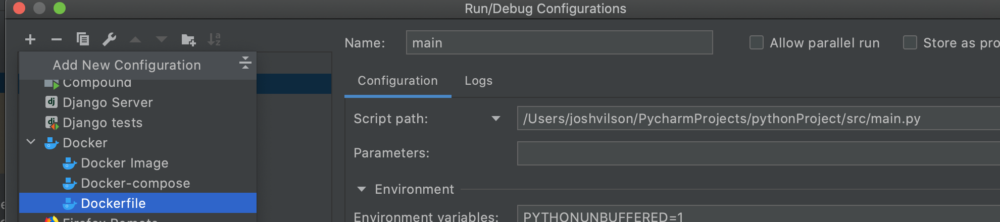
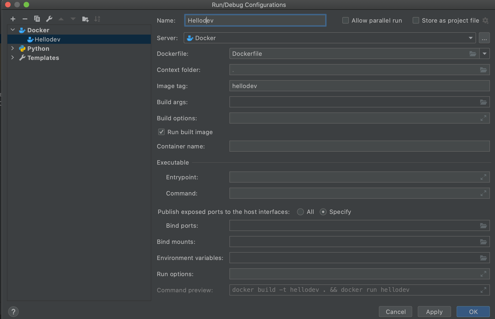
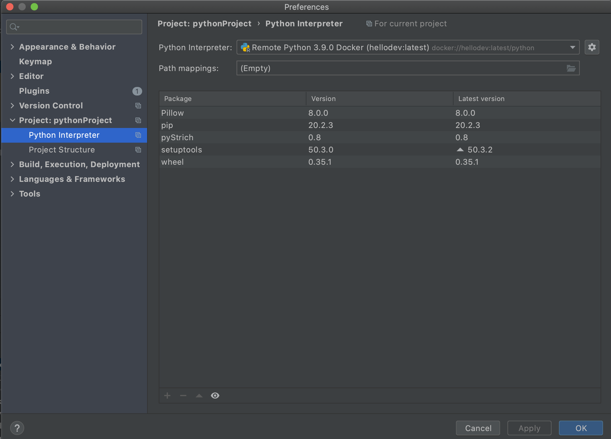

So, you want to run a Python program within a docker container? Well, your in luck! This tutorial will try its best to teach you. Get ready to be dockerized in Pycharm!
Under Build, Execution, Deployment Select Docker. Click on Add if Docker doesn’t appear within the list. Since I’m using Mac, I have Docker for Mac selected under the Connect to Docker daemon with: section. However, for Windows if you have the docker server running the Docker Machine: should be populated with local. If everything is working as expected, you should see Connection successful like above.
Next, Click on the plus icon to add a new configuration.
Select Dockerfile as the new configuration and enter the follow information as follows.
Enter the name of the run config. Select the Dropdown list for DockerFile: and select Dockerfile. Type the name of the Image tag preferably the same as the run config and click Apply and OK.
You should see the above content when it has successfully built and deployed. Under the Build Log section, it shows what all things had to run for the build to finish and deploy a docker container. The Log or Attached Console section will display the contents of whatever you printed out in your script.
It will register the image name and just click OK. Once done, it will either auto select the version of Python or you might just need to select the new version that was just added. This will just use the python version used within your docker container. Next, go to Interpreter Settings which you’ll see if you click on the Python version on the bottom left.
This will bring up and update all the libraries that were installed. Just Click Apply and OK when ready. Now, any lines underneath our code will be removed since we defined the proper version.
Congratulations! You have now set up a python project within a docker container within Pycharm.
{kind=link}